You come downstairs one morning and find a note on the table.
Please go to the store today and buy the following:
So far there is nothing unusual about this. You plan to go to the grocery store on your way home that evening. Then you read on.
These are a bit trickier. If you are like many readers of this book, you may not be allowed to purchase alcohol or possibly even cigarettes. In the United States, you must be 21 or over to buy alcohol and over 18 (or 19 in some states) to purchase cigarettes. Depending on where you live, it may also be quite inconvenient to purchase alcohol. In some places, by law, alcohol is sold only at certain times of day. In some places—certain states in the United States and certain countries in Europe, for example—it is sold only in government-run stores.
Many goods, like alcohol, are restricted in terms of who can buy them, when they can be purchased, and where they can be purchased. Alcohol laws differ from country to country. In most European countries, for example, you can buy alcohol at the age of 18. The laws also change over time. Thirty years ago, 18-year-olds could buy alcohol in the United States as well. Ninety years ago, it was illegal for anyone to buy alcohol in the United States.
Next on the list is the following.
This may also be difficult. You know that you can probably find someone who has tickets and is willing to sell them, but you know that local laws say that this, too, is illegal. So-called scalping of tickets is forbidden. Still, if you go to eBay, you’ll probably be able to find some tickets for sale.
Then the list gets stranger:
At this point (at least if you are living in the United States), you begin to seriously worry. You search the Internet for “Cohiba” and discover that these cigars are manufactured in Cuba, but you vaguely remember that it is illegal to import goods from Cuba to the United States. You know that camembert is a French cheese, but “raw milk” sounds strange. More online investigation informs you that it is also illegal to import cheeses into the United States unless they are made from pasteurized milk. Apparently, raw milk cheeses may carry dangerous bacteria. As for marijuana, you already know that it is illegal in the United States.
You read on.
This is another transaction that you know is illegal. That said, you know that there are many illegal immigrants working in your town. It would be easy to find someone to hire if you were willing to break the law. With some foreboding, you turn the list over and read the other side.
Most of the things that were on the list up to this point were goods or services that you would probably be able to find if you had to. Even though some of them could not be purchased legally, it would not be too hard to find out where to purchase most of them. (Oddly, it would probably be easier to get the marijuana than the cheese.) A human kidney is a different proposition, however. You’re pretty sure, even without research, that buying and selling human organs is illegal, and you would have no idea where to go to buy a kidney even if you were willing to break the law.
We know that the market interaction of buyers and sellers creates value in an economy.We discuss this in detail in Chapter 6 "eBay and craigslist", and Chapter 8 "Why Do Prices Change?". In a market, sellers supply a good or a service, and buyers demand that good or service. Because each transaction is voluntary, the value that the buyer places on the good is always greater than its value to the seller. This means that each trade creates some value. In addition, if the market is competitive, all value-creating trades occur in the market; there are no disappointed buyers or sellers.
This logic suggests that governments should be doing everything in their power to encourage and facilitate trade. Yet, in practice, there are several ways in which governments do the opposite: they actively intervene to restrict trade. We have just listed a large number of examples, and you can surely think of many more. We would like to understand all the restrictions that are deliberately put in place to impede trade.
Our main aim here is not to analyze the rationales behind these restrictions, although we do briefly explain some of them. In other chapters, we provide more insight into precisely why governments impose these and other limitations on our ability to transact with one another.See in particular Chapter 13 "Superstars", and Chapter 15 "Busting Up Monopolies". Our goal in this chapter is to explore what happens when governments interfere with trade in different ways.
One message of this chapter is a reiteration of the gains from trade, together with the recognition that they provide a powerful incentive for people to get together and transact with one another. It seems that whenever the government steps in to try to prevent them from trading, people still try to find a way around these restrictions. The gains from trade are a powerful motivator. Indeed, people continue to trade even when this is an illegal act that carries a significant risk of fines or imprisonment. We use the term underground economy to describe where these trades occur. The question we want to answer in this chapter is as follows:
What are the consequences of government restrictions on trade?
In this chapter, we will see many different ways in which governments intervene. For most of our analysis, we use the supply-and-demand framework. We analyze different kinds of government policy and examine the following questions:
We organize our discussion by looking at different categories of restrictions on trade. First, we look at the sale of goods and services in domestic markets. Then we turn to restrictions in international markets for goods and services. Finally, we turn to restrictions not on goods and services but on labor, both within and across countries.
Looking at your shopping list, there are some items that you simply cannot buy. For example, marijuana and the raw milk cheese from France are not available for purchase in stores in the United States. And depending on your age as well as the time and day of the week, you may not be able to buy the cigarettes and whiskey. We begin by discussing these types of market interventions.
The most fundamental intervention in a market occurs when the government closes down trading completely—that is, the government simply says that it is illegal to trade certain goods or services. Examples are numerous and stem from many different motivations.
Health and safety. Most governments ban addictive drugs, such as heroin, cocaine, and marijuana. The primary reason is that these and similar drugs are deemed to be harmful to those who use them. A secondary reason is that governments may think—rightly or wrongly—that the trade of such drugs also has other harmful implications, such as increased crime.
Governments also ban trade in other products for similar reasons of health and safety. One of the functions of government in most countries is to oversee the safety of products, both generally and more specifically in terms of health risks. In the United States, the Food and Drug Administration certifies factories and food processing and also oversees the approval of pharmaceuticals. Meanwhile, the Bureau of Consumer Protection (http://www.ftc.gov/bcp) is charged with ensuring that goods meet certain legislated safety standards. Goods that do not meet these standards cannot be legally traded. For example, it is illegal to sell a new car without seatbelts and airbags in the United States.
Ethics, morality, and religion. The exchange of some goods and services is banned for ethical or moral reasons. Examples include the trading of human organisms, the sale of alcohol, and various forms of prostitution.
The ban on the trading of human organs is rooted primarily in an ethical belief that buying and selling body parts is wrong. Many people argue that the moral case for banning organ selling is very shaky, and the world would be a better place if such trades were allowed. It is true that many find the idea of trading body parts for dollars to be repulsive. We have a sense that people would sell a kidney only if they were truly in desperate financial straits, and there is something terrible about the image of, say, a mother selling a kidney to feed her children. Yet there are people who die every day because doctors are unable to find a suitable organ donor in time; that, too, is a sad image.
In many places, the consumption and sale of alcoholic beverages is forbidden, often for religious reasons. The sale of alcohol is prohibited in some Muslim countries, such as Saudi Arabia and Kuwait. Religious pressure also led to a 13-year ban on alcohol in the United States under the 18th Amendment to the Constitution; this state of affairs was known as Prohibition. Indeed, in many counties in the United States, the sale of alcohol is still prohibited. Likewise, many other countries in the world have regions that are “dry.”
Not surprisingly, there is often disagreement about which trades should be ruled immoral or unethical. Different laws in different countries regarding the sale of alcohol are one illustration of this. Another example is prostitution, which is illegal in many places yet legal in others. For example, prostitution is legal (although heavily regulated by the government) in the Netherlands and in parts of Nevada.
Fairness. Sometimes, the government simply takes the view that certain trades are unfair. For example, scalping—the reselling of tickets to concerts and exhibitions—is frequently prohibited for this reason. The following story illustrates that people often see the reselling of tickets as unfair.
Perry Loesberg wanted to surprise his 10-year-old daughter Amy with tickets to “Hannah Montana,” the sizzling-hot concert tour featuring 14-year-old TV star Miley Cyrus.
Instead, he was the one surprised. Though he bought a $30 fan club membership to get access to tickets ahead of the general public, and then logged on to the Ticketmaster Web site before the general public sale began, Loesberg still came up empty-handed.…
Tickets to each of the 54 shows on the “The Best of Both Worlds: Hannah Montana and Miley Cyrus” tour…sold out within minutes of going on sale. Almost immediately, online marketplaces such as StubHub and craigslist were offering dozens of seats, many selling for more than $2,000 each. Tickets were originally priced at $22–$66.
What kind of ignited parents is I think they thought it should be more fair,” said Debra Rathwell, senior vice president for AEG Live, the tour’s promoter…“We would like fans to sit in these seats. But everything you do, [scalpers] find a way to skirt around it.”
Many of the purchasers are parents unfamiliar with the post-Internet ticket market. They were amazed at the availability of tickets—not to mention the high prices—on the re-sale market.…
Many have pointed to computer software programs that allow users to, in essence, cut in line on the Ticketmaster Web site.…The outcry over Hannah Montana is unusual for other reasons. Ray Waddell, senior editor at Billboard magazine, said parents and children are being disappointed, and their complaints have found sympathetic ears, including the attorneys general of Missouri, Arkansas, Connecticut and Pennsylvania…
It has been like the Wild West out there,” said Waddell. “Things are going to tighten up, (there will be) more regulation about who’s selling, who’s buying and how they are getting their tickets.”Peggy McClone, “Parents Are Angry about ‘Hannah Montana’ Ticket Sales,” The Star Ledger, October 29, 2007, accessed January 29, 2011, http://www.nj.com/news/index.ssf/2007/10/parents_are_upset_about_hannah.html.
There are many products that can be legally traded, but the government places substantial conditions on the terms of those trades. For example, several legal goods and services cannot be purchased by minors and can be sold only by licensed sellers. Obvious examples are alcohol and cigarettes, but there are many others. Casino gambling is restricted to adults. Many pharmaceuticals can be sold only by licensed pharmacists and bought only with a doctor’s prescription.
These restrictions vary a lot by time and place, which again tells us that there is no simple right or wrong where these laws are concerned. Different states have different laws. Not all stores can sell liquor. In Sweden, for example, alcohol is sold only in state-run stores. The legal drinking age in Europe is different from the legal drinking age in the United States. Some drugs require a prescription in some countries yet are available over-the-counter in others.
Figure 12.1 "Supply, Demand, and the Gains from Trade" shows the buyer surplus and seller surplus in a competitive marketA market that satisfies two conditions: (1) there are many buyers and sellers, and (2) the goods the sellers produce are perfect substitutes. and reminds us that the gains from trade in a competitive market are at a maximum. All mutually beneficial trades have been carried out. Government interventions in markets typically have the effect of eliminating some or all these gains from trade.
Toolkit: Section 31.10 "Buyer Surplus and Seller Surplus"
You can review the different kinds of surplus and the gains from trade in the toolkit.
Figure 12.1 Supply, Demand, and the Gains from Trade
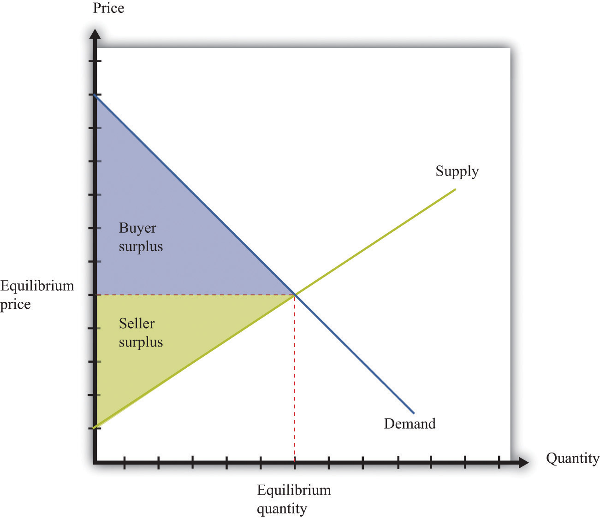The area below the demand curve and above the price is the buyer surplus; the area above the supply curve and below the price is the seller surplus.
The economic analysis of the closing of a market is very simple. If the government successfully prevents trade, then the quantity traded is zero. All producer and consumer surpluses in Figure 12.1 "Supply, Demand, and the Gains from Trade" are lost. An economist’s first response to the closing of a market—any market—is that it brings a loss because some potential gains from trade go unrealized. The question then becomes whether any benefits from closing down a market justify the lost gains from trade.
As our examples reveal, there are many reasons for closing a market, so there is no simple answer to the question, “Is it good to shut down a market?” Each argument must be looked at on a case-by-case basis, and the particulars of specific examples are beyond the scope of this book. Entire books have been written, for example, on the market for human organs or the legalization of prostitution.
When you read the shopping list at the beginning of the chapter, you might also have been struck by the fact that the government’s success in blocking trade is often limited. You probably would find it difficult to buy a heart for transplant on the open market. But if you know where to go, you could almost certainly buy marijuana. Even if you are underage, you may be able to get a fake identification card and buy alcohol. And buying scalped tickets to a concert or a sports event is usually easy, if you have the money. The economic message is simple and fundamental. When there are gains from trade, people will try to realize those gains. When trades are illegal, economic activity moves into the so-called underground economy but is unlikely to disappear completely.
Another way in which governments intervene in markets is not by banning trade outright but by placing a restriction on the quantity traded. In most modern economies, such restrictions are little used in a domestic context but are much more prevalent in international trade. If we look back in history, though, we can find instances of rationingThe quantity available on the market is less than the equilibrium quantity. in the domestic economy. Rationing means that the quantity available on the market is less than the equilibrium quantity. Some surplus goes unrealized because willing buyers and sellers are prevented from trading. During and after World War II, many basic goods were rationed in the United States, Britain, and elsewhere.
The following excerpt by journalist Joelle Kirch Preksta comes from oral histories of World War II collected by the Carnegie Library.
Ruth showed me several of the ration books she was issued during World War II.…She explained that staples such as sugar, butter, and eggs were rationed in order to help supply our troops overseas and therefore were difficult to obtain in stores.…The following excerpt [is] taken from the “Instructions” section of the books…
Rationing is a vital part of your country’s war effort.…Any attempt to violate the rules is an effort to deny someone his share and will create hardship and discontent. Such action, like treason, helps the enemy. Give your whole support to rationing and thereby conserve our vital goods. Be guided by the rule: “If you don’t need it, DON’T BUY IT.”
The books also contained a warning which indicated that someone who violated the rules for the ration books could be imprisoned for as long as 10 years or fined as much as $10,000.Ruth L. Baxter, interview by Joelle Kirch Preksta, May 21, 2001, Carnegie Library of Pittsburgh, http://www.carnegielibrary.org/research/pittsburgh/history/ww2/ww27.html.
Despite these strong moral and legal sanctions—comparing black market trading with treason, no less—there was a substantial underground market for all sorts of rationed goods. For example, the Carnegie oral histories describe a young woman in her twenties named Mary: “She somewhat embarrassingly recalled that she was able to dishonestly procure an extra carton of cigarettes every month for herself because her aunt worked at the drug store where they could be purchased. To this day she says she feels somewhat guilty over this unpatriotic indiscretion.”Mary Hresko and Mary Vincher Shiner, interview by Mark Kernion, May 21, 2001, Carnegie Library of Pittsburgh, http://www.carnegielibrary.org/research/pittsburgh/history/ww2/ww29.html.
Figure 12.2 "The Implications of Quantity Rationing" shows the implications of quantity rationing. Part (a) of Figure 12.2 "The Implications of Quantity Rationing" shows that there is a deadweight loss. We see that a quantity ration does not tell us what the price will be. It could be anywhere between the minimum price that the marginal seller will accept (the price found on the supply curve) and the maximum price that the marginal buyer will pay (the price found on the demand curve). In the absence of any other mechanism, the price is determined by bargaining among buyers and sellers. In the case of World War II rationing, sellers were often in stronger bargaining positions, which pushed the price toward the higher end of the range. For this reason, quantity rations were often supplemented by a maximum price, called a price ceilingA government-imposed maximum price. (part (b) of Figure 12.2 "The Implications of Quantity Rationing"). Figure 12.3 "A World War II Poster" shows a poster from this period.
Toolkit: Section 31.11 "Efficiency and Deadweight Loss"
You can review the concepts of efficiency and deadweight loss in the toolkit.
Figure 12.2 The Implications of Quantity Rationing
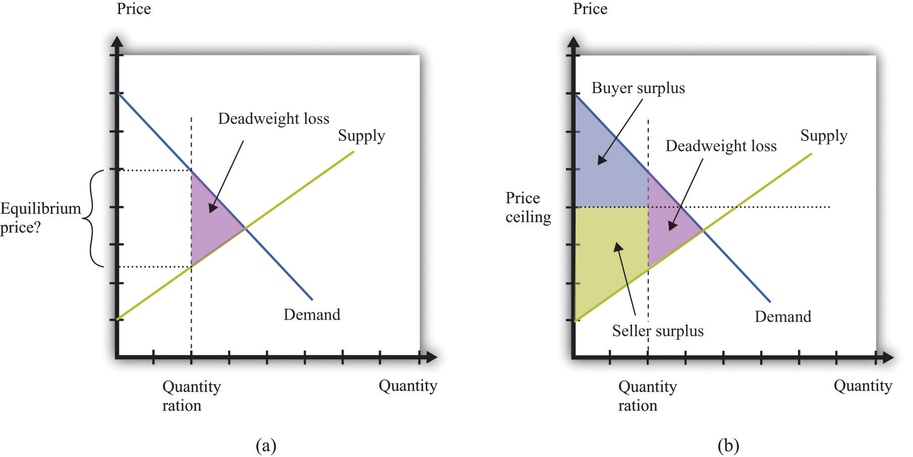A quantity ration leads to deadweight loss but by itself does not tell us what the price will be.
Figure 12.3 A World War II Poster
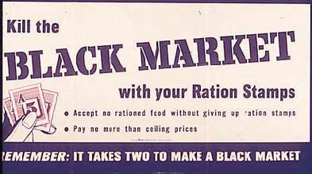Price ceilings during World War II led to illegal trading above the fixed price, so the government campaigned to prevent people from trading in these markets.
Hulton Archive/Getty Images
It is more common for governments to intervene in an economy by using price tools rather than quantity tools. In particular, governments sometimes intervene using restrictions on how high the price in a market can go. This is called a price ceiling. A classic example of a price ceiling is rent control. In New York City and some other places, there are restrictions on how much landlords can increase the rent on apartments.
Figure 12.4 "The Effects of a Price Ceiling" illustrates a price ceiling. Notice that (unless there is also a quantity ration in place) the price ceiling must be below the equilibrium price; otherwise the policy is irrelevant. The main economic implications of a price ceiling can be readily seen from this figure.
Figure 12.4 The Effects of a Price Ceiling
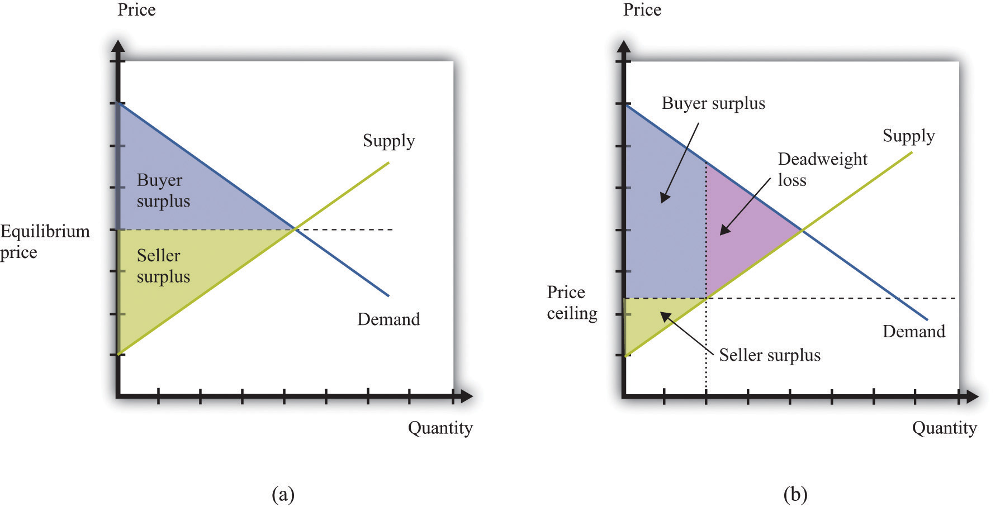With no price ceiling (a), all the possible gains from trade in the market are realized. With a price ceiling (b), some gains from trade are lost because there are fewer transactions.
Rent controls keep the price of an apartment rental below its equilibrium level. Not surprisingly, lots of people would like to live in rent-controlled apartments. The quantity demanded is greater than the quantity supplied. Because the price is, by law, not allowed to undergo the adjustment that would restore equilibrium in the market, some other kind of rationing must take place instead.
Rent controls are enacted with distributional goals in mind. The aim is to ensure that people with lower incomes are not priced out of the rental market. Put differently, the goal is to redistribute income from sellers to buyers—that is, from landlords to those who are renting apartments. A difficulty with price ceilings is that people have an incentive to try to get around the restrictions in creative ways. There is often more to a transaction than a simple exchange of money for a good or a service. There may be nonmonetary aspects of the transaction that governments find harder to regulate. When apartments are covered by rent controls, landlords often ask for “key money.” This is an off-the-books, up-front payment that renters must agree to pay before renting the apartment. In other words, it is a polite term for a bribe. In addition, some landlords may not put much money or effort into the upkeep of rent-controlled apartments, thus compensating for the low rent by reducing the quality of the apartment.
In emergency circumstances, temporary price ceilings may be put into effect. These take the form of laws that prevent so-called price gouging. For example, in the aftermath of a hurricane, some goods and services are typically very hard to come by. Basic necessities like food and water may be in limited supply. In the weeks and months after such a disaster, building supplies and similar products may be almost completely unavailable.
After Hurricane Katrina, price-gouging laws applied to states affected by the storm.
While there is no federal price gouging law, many states have enacted some type of prohibition or limitation on price increases during declared emergencies. All of the affected states—Louisiana, Mississippi, Alabama, and Florida—have price gouging laws that are triggered by the declaration of an emergency in the state. Generally, the laws prohibit the sale of goods and services in the designated emergency area at prices that exceed the prices ordinarily charged…
However, there exists a general exemption for increased prices that are the result of additional costs incurred for procuring the goods or services in question.
…
In Alabama,…evidence of unconscionable pricing exists “if any person, during a state of emergency declared pursuant to the powers granted to the Governor, charges a price that exceeds, by an amount equal to or in excess of 25% the average price at which the same or similar commodity or rental facility was obtainable in the affected area during the last 30 days immediately prior to the declared state of emergency.”Angie A. Welborn and Aaron M. Flynn, “Price Increases in the Aftermath of Hurricane Katrina: Authority to Limit Price Gouging,” Congressional Research Service Report for Congress, September 2, 2005, accessed January 29, 2011, http://www.fas.org/sgp/crs/misc/RS22236.pdf.
Think about the market for lumber (wood for building purposes) in the first few weeks following a hurricane. Were we to apply supply and demand reasoning to this situation, we would get a diagram like Figure 12.5 "The Market for Lumber after a Hurricane". Because there is a great deal of new construction going on, there is a rightward shift in the demand for lumber. The supply of lumber is likely to be fairly inelastic, at least until it is possible to start bringing supplies in from other states. Thus the shift in the demand will lead to a large increase in the existing price. If the price is allowed to increase to its new equilibrium, existing suppliers will obtain a big gain. Price-gouging laws, however, prevent suppliers from raising their prices in this way.
Figure 12.5 The Market for Lumber after a Hurricane
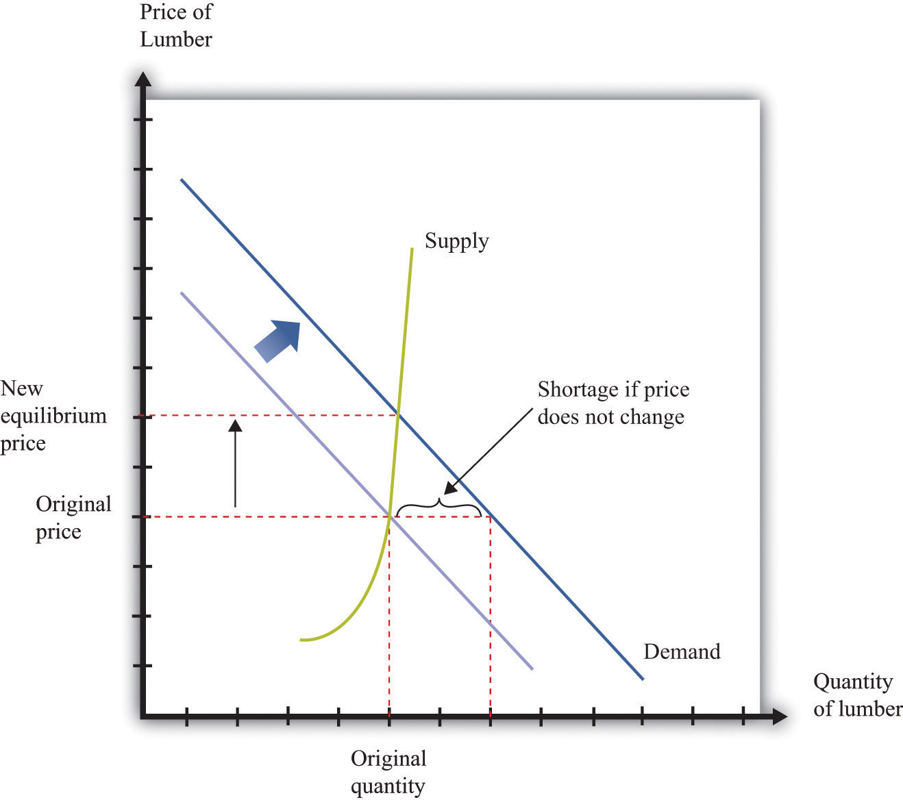If the market were allowed to work, the price of lumber would increase substantially, but there would not be much more wood supplied. If suppliers are not allowed to increase prices, then demand exceeds supply.
This presents two problems. First, suppliers no longer receive the price signal that tells them to bring more wood to market. In the short run, this may not matter so much. After all, Figure 12.5 "The Market for Lumber after a Hurricane" shows that, with inelastic supply, the shift in the demand curve would not in fact lead to a big increase in the quantity supplied, even if the price were allowed to adjust. In the longer run, though, this is more of a problem because there is less incentive for suppliers from further away to bring in additional lumber.
The second problem with forcing sellers to keep their price fixed is that the increase in demand will lead to a shortage. This is also shown in Figure 12.5 "The Market for Lumber after a Hurricane". Because demand now outstrips supply, the limited supply will have to be rationed in some way. Most likely, what will happen is that demanders will have to queue to get the lumber that they need. The time that they must spend standing in line has an opportunity costWhat you must give up to carry out an action.; they would rather spend that time doing something else. We can think of the time spent in line as increasing the effective price that they have to pay.
These arguments do not necessarily mean that price-gouging laws have no merit. In the aftermath of a hurricane, many things may be happening. Lumber firms may see a temporary increase in their market power. Such an increase in market power gives them an incentive to increase prices, so price-gouging laws may serve as a way to limit the abuse of monopoly power.
A price floorA government-imposed minimum price. is closely analogous to a price ceiling. The difference, as the name suggests, is that it is a government-imposed minimum price rather than a government-imposed maximum price. The government says that all transactions must be at or above this minimum price. The minimum wage is the most important example of a price floor.We devote a whole chapter to the analysis in Chapter 11 "Raising the Wage Floor". With the minimum wage, the aim is to redistribute income from buyers to sellers—that is, from firms to suppliers of unskilled labor.
Figure 12.6 "The Implications of a Price Floor" illustrates a price floor. The main economic implications of a price floor can be seen from this figure.
Figure 12.6 The Implications of a Price Floor
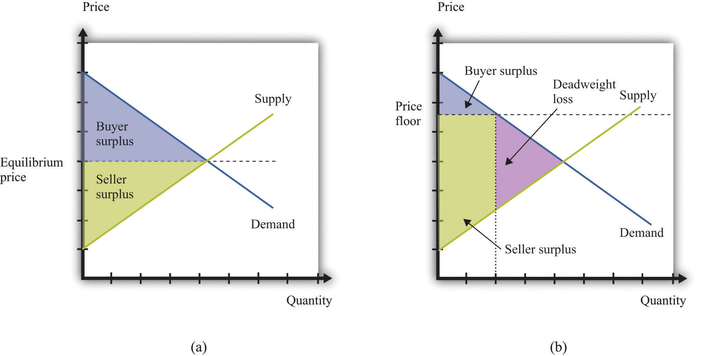With no price floor (a), all the possible gains from trade in the market are realized. With a price floor (b), some gains from trade are lost because there are fewer transactions.
Just as renters use key money and other devices to get around rent control, firms (and workers) sometimes devise ways to get around minimum wage requirements. Employers who are forced to pay a minimum wage may provide worse working conditions than those who pay a market wage. Or, if you want to work at a company and are willing to work at less than the minimum wage, you can negotiate a deal with your employer so that you are paid the minimum wage for reported hours but then work additional hours for nothing. The minimum wage regulations in the United States stipulate that this is illegal, punishable with fines of $1,100 per violation.US Department of Labor, “Wages: Minimum Wage,” accessed March 14, 2011, http://www.dol.gov/dol/topic/wages/minimumwage.htm.
Sometimes individuals work their way around such restrictions even more blatantly. In the former Soviet Union, price ceilings were put in place in an attempt to keep the prices of basic goods down for households. Martin Walker, a journalist in Moscow, wrote of his experiences with these price ceilings in the food markets outside Moscow.Martin Walker, Guardian. A butcher offering to sell Walker a side of beef assured him that the price per kilogram was fixed. “However,” said the butcher, “the weight is subject to negotiation.”
In the Soviet Union, the limited supply of goods led to long lines for those who wanted to purchase basic commodities, such as bread. You can think of these lines as an additional component of the price: you pay money plus the value of the time that you spend standing in line.
Although price ceilings and price floors have different implications for the price in the market, they both imply that the quantity traded in the market will be less than the equilibrium quantity. The reason is simple: neither buyers nor sellers can be forced to trade if they do not want to. If the price is above the equilibrium price, the quantity is determined by the amount of the good or the service that people are willing to buy. Some would-be sellers are disappointed because they cannot find someone to buy from them. With a minimum wage, for example, not everyone who wants a job can find one. If the price is below the equilibrium price, the quantity is determined by the amount of the good or the service that people are willing to sell. Some would-be buyers are disappointed because they cannot find someone to sell to them. With rent control, for example, not everyone who wants a cheap apartment can find one.
Price floors, price ceilings, and quantity restrictions are important but relatively rare policies. The government intervenes regularly in almost every market in the economy in a different way—by the imposition of taxes. Had you purchased the milk and sugar on our shopping list, for example, you would very likely have paid a sales tax. Sometimes cities levy their own sales taxes as well. On certain goods, such as alcohol or gasoline, you may pay additional taxes.
A taxA payment made to the government that is associated with an economic transaction. is a payment made to the government that is associated with an economic transaction. Although the details of taxes can differ substantially, most taxes come down to one simple point: the price paid by the buyer is higher than the price received by the seller.
Suppose you want to purchase a book for its list price, say, $20. In the United States, if you take this book to the cash register, you will typically be charged a sales tax. If the sales tax is 5 percent, you will have to pay $21 for the book. The store collects the $1 tax on behalf of the government. So who is paying this tax? On the one hand, the amount of the tax is marked right there on the receipt as an amount you have to pay. Yet it is the store that actually sends the money to the government.
Imagine, by contrast, that you had to give the bookstore only $20 but then were personally responsible for sending the sales tax to the government. You would have to file a sales tax declaration each year for every item you bought. That would be both inconvenient and difficult for the government to monitor; for this reason, sales taxes are funneled through the seller. But we are interested in a more fundamental question: would this make a difference on who pays the tax? The answer is no. You would still pay $21, the government would still get $1, and the bookstore would still get $20.
In other words, it does not make any difference whether the tax is imposed on buyers or sellers. This is one of the most surprising results that economics teaches us. In our book example, the conclusion may seem obvious. Yet people often to fail to appreciate the far-reaching significance of this insight.
For example, social security taxes in most countries are imposed on both workers and employers. Suppose the government changed its policy and declared that the portion of social security that was previously paid by the employer now had to be paid by the worker instead. Looking at this as employed workers, we might think that we had just been hit with a huge tax increase. Indeed, if nothing else changed, the policy change would make workers worse off. Fortunately, the logic of supply and demand would quickly come to our rescue. At existing wages, firms would no longer be able to hire all the workers they wanted. Wages would be bid up, and before long we would expect to see workers and firms no better and no worse off than they were previously.
The key question, then, is not who sends the money to the government. The key question is, What happens to prices when a tax is imposed?
To answer this, imagine that the government increases taxes on gasoline by 50 cents a gallon and consider two extreme cases. First, suppose the price of gas increases by 50 cents a gallon. Households are evidently paying the tax; the amount they must pay per gallon has gone up by the full amount of the tax. Now suppose that the price of gasoline at the pump does not change at all. Then firms are paying the tax: they are receiving 50 cents less per gallon once they pay the tax to the government. Most often, we expect to see the price of gasoline increase but by less than 50 cents. Therefore, the burden of the tax is shared between the gas station and the household. It is the change in the price that tells us who really pays the tax.
Figure 12.7 "The Deadweight Loss from a Tax", and Figure 12.8 "The Loss in the Buyer Surplus and the Seller Surplus from a Tax" illustrate the effects of a tax.
Figure 12.7 The Deadweight Loss from a Tax
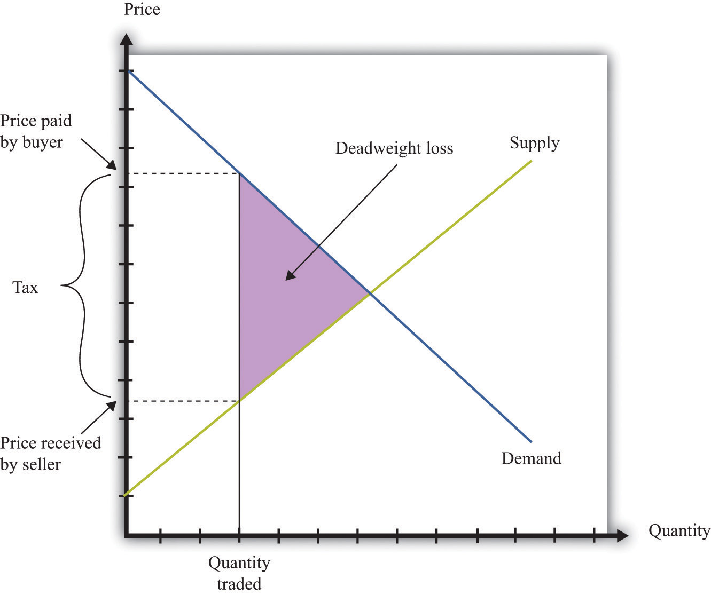A tax means that there is a wedge between the price paid by the buyer and the price received by the seller.
Figure 12.8 The Loss in the Buyer Surplus and the Seller Surplus from a Tax
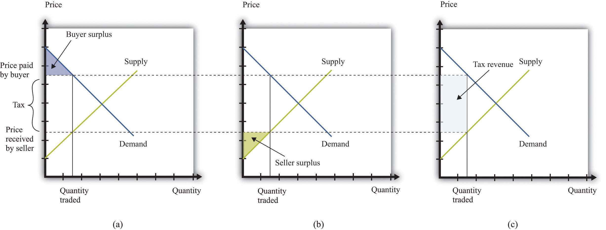The total surplus is the sum of the buyer surplus (a), the seller surplus (b), and the tax revenue received by the government (c).
Tax incidenceThe way in which the burden of a tax is divided between buyers and sellers. is the way in which the burden of a tax is divided between buyers and sellers. In general, the incidence of a tax depends on the price elasticity of supplyThe percentage change in the quantity supplied to the market divided by the percentage change in price. and the price elasticity of demandThe percentage change in the quantity demanded in the market divided by the percentage change in price.. Figure 12.9 "Tax Incidence with Inelastic and Elastic Demand" shows why tax incidence depends on the elasticity of demand. That figure has two parts. In both parts, we start from the same initial competitive equilibrium and impose a tax of the same size. This means that the gap between the price paid by buyers and the price received by sellers is identical.
Figure 12.9 Tax Incidence with Inelastic and Elastic Demand
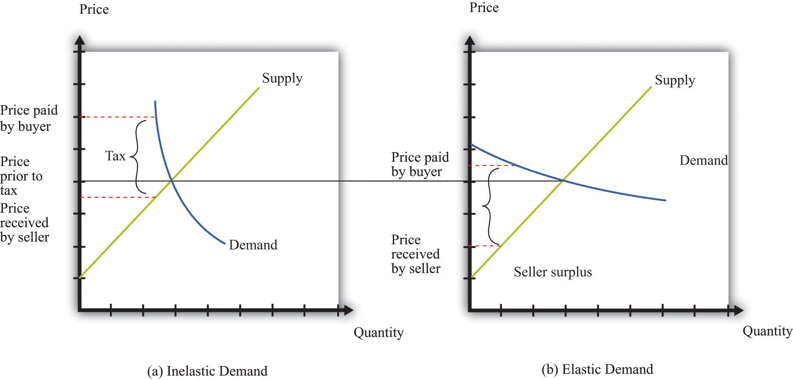When demand is inelastic (a), most of the burden of the tax is borne by buyers, while the opposite is true when demand is elastic (b).
In part (a) of Figure 12.9 "Tax Incidence with Inelastic and Elastic Demand", demand is inelastic. Buyers are not very price sensitive, so even if the price increases, their quantity demanded does not change a great deal. The result is that the price paid by buyers increases a lot. Most of the burden of the tax is borne by buyers. In part (b) of Figure 12.9 "Tax Incidence with Inelastic and Elastic Demand", demand is elastic. As the price increases, the quantity demanded decreases a great deal. In this case, the price paid by buyers increases much less, and the price received by sellers decreases by more. Most of the burden of the tax is borne by sellers.
Keep in mind also that the distortion induced by the tax is smaller when demand is inelastic. The key indicator of the distortion is how much change there is in the quantity traded. When demand is inelastic, the quantity traded changes by less. As a consequence, there is a much smaller deadweight loss in part (a) of Figure 12.9 "Tax Incidence with Inelastic and Elastic Demand" than in part (b) of Figure 12.9 "Tax Incidence with Inelastic and Elastic Demand".
Given our analysis so far, you might think that governments should not impose taxes at all. After all, taxes reduce the surplus received by buyers and sellers. However, there are several reasons why governments tax households and firms, despite the adverse consequences for the gains from trade.Many of these arguments for taxation are also discussed in other chapters.
Raising revenue. Governments perform certain essential functions, such as maintaining a legal system and defending the borders. Governments also typically supply various goods and services (such as roads, schools, and streetlights) as well as paying out subsidies to certain industries and transfers to individuals. All of these require government revenues. We are not interested right now in which of these things governments should do nor with the question of whether governments intervene too much or too little in the economy. It is simply a fact that governments incur a lot of expenses, and these expenses must be paid for through taxation. One key reason for taxes is therefore to raise revenue to fund government activities.
In fact, governments sometimes finance their expenses through borrowing rather than current taxation. But borrowing is the same as deferred taxation: the debt obligation must eventually be paid through taxes levied in the future.
Redistributing income. Taxes are a means by which governments can take money from one group of people and give it to another. Governments often use progressive taxation, meaning that the rich are taxed proportionately more than the poor. Taxation then serves to make the distribution of income more equal.In Chapter 13 "Superstars", we look in detail at the arguments for redistribution in society.
Externalities. In some circumstances, an individual’s actions have an influence, either positive or negative, on others in the economy. Economists call such an effect an externalityThe direct cost imposed or direct benefit bestowed by one person’s actions on others in society..Chapter 14 "Cleaning Up the Air and Using Up the Oil" is all about such externalities. In the presence of externalities, distortions in the market and some type of government intervention may be warranted. Often, that intervention takes the form of taxes and subsidies that alter individual incentives to encourage behavior that promotes economic efficiencyThe basis that economists use for judging the allocation of resources in an economy..
Sometimes externalities are adverse; these are known as negative externalities. The effect of second-hand smoke is an example. Other times there are positive externalities associated with an action. An example is education, which has benefits to society as well as to the individual who obtains the education. When there are negative externalities, the government can impose a tax to discourage the activity in question. When there are positive externalities, the corresponding government response is a subsidy.
Uninformed choices. Economists generally presume that informed individuals will make informed choices. Not everyone agrees with economists about this. One often hears the argument that governments ought to intervene so that individuals do not make the “wrong decisions.” Take, for example, the decision to smoke cigarettes. It has been known for a long time that cigarette smoking is harmful to one’s health. One reasonable view is that smoking should be purely a matter of individual choice: people can make their own choices about the enjoyment of smoking versus the adverse health effects. As long as individuals make informed choices, there seems to be little basis for government intervention.
But another view is that people are not always capable of informed choice. Perhaps people are not good at making decisions that involve their health 30 years from now. Perhaps people are not good at making decisions about addictive substances. Perhaps it is not appropriate to think of rational individuals making informed choices when many people start smoking as children. An argument can then be made that governments should step in and alter incentives, through taxes and subsidies, to help people make better choices.
Toolkit: Section 31.2 "Elasticity"
You can review the definition and calculation of elasticities in the toolkit.
A subsidyA payment made to a producer to encourage production. is the opposite of a tax. It is a payment made to a producer to encourage production. A subsidy means that the price paid by the buyer is lower than the price received by the seller. Figure 12.10 "The Deadweight Loss from a Subsidy" shows the deadweight loss from a subsidy. Subsidies distort markets not by leading to too small a quantity being traded but by causing too large a quantity to be traded. The deadweight loss lies to the right-hand side of the competitive equilibrium quantity because some trades occur where the cost exceeds the benefit. Figure 12.11 "The Buyer Surplus and the Seller Surplus after the Imposition of a Subsidy" shows the buyer surplus and the seller surplus in the presence of a subsidy. Both are increased by the subsidy. However, subsidies mean that the government spends resources rather than taking them in. The figure shows that the cost of the subsidy is greater than the increased surplus received by the buyers and the sellers. The difference between the cost and the increases in surplus is the deadweight loss.
Figure 12.10 The Deadweight Loss from a Subsidy
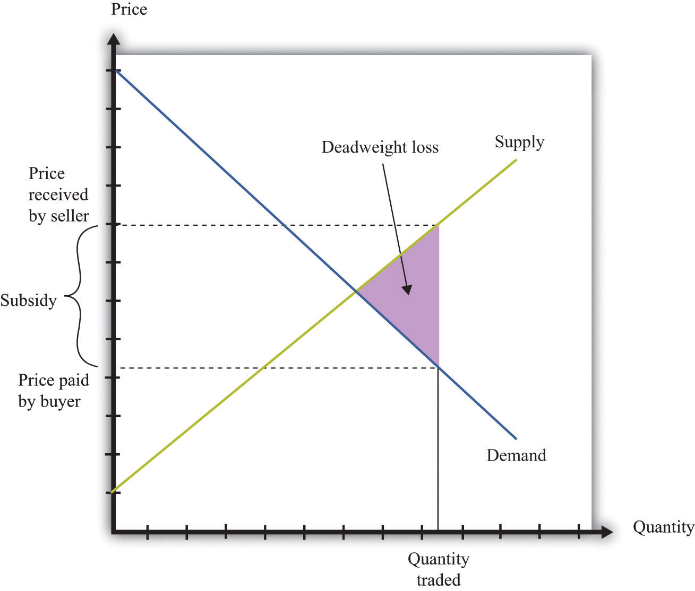A subsidy means that some transactions are now carried out even though they actually destroy value.
Figure 12.11 The Buyer Surplus and the Seller Surplus after the Imposition of a Subsidy
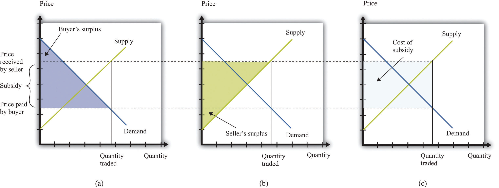The buyer surplus and the seller surplus are shown in (a) and (b), and the cost of the subsidy is shown in (c). The total surplus is obtained by adding together the buyer surplus and the seller surplus and then subtracting the subsidy paid by the government.
Figure 12.12 "The Different Ways in Which Governments Intervene in Markets" summarizes the different kinds of trade restrictions that we have looked at.
Figure 12.12 The Different Ways in Which Governments Intervene in Markets
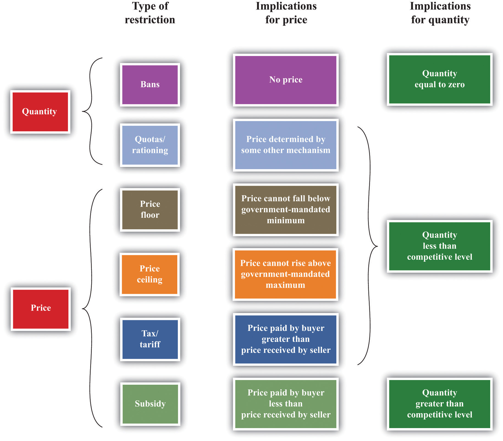Restrictions do not appear only within a country. We see restrictions on trade across countries as well. In our shopping list at the beginning of the chapter, we mentioned several goods that are imported from other countries, such as Cuban cigars and French cheese. We begin by reviewing the motivations for trade between countries. Just as individuals are motivated to trade by the fact that it can make them better off, countries can also benefit from trading with each other.
The principle of comparative advantage provides one reason why there are gains from trade among individuals.We discuss this in Chapter 6 "eBay and craigslist". Because different individuals have different skills and abilities, everyone can benefit if people specialize in the things that they do relatively well and trade with others to obtain the goods and services that they do not produce. Such specialization is a cornerstone of our modern economy, in which people are specialists in production but generalists in consumption.
The idea of comparative advantage also provides a basis for trade among countries. In the absence of trade, countries end up producing goods and services that they can provide only very inefficiently. When countries trade, they can instead specialize in the goods and the services that they can produce relatively efficiently. All countries can take full advantage of their different capabilities.
We illustrate comparative advantage in a simple way, with a story about trade between Guatemala and Mexico. If you understand this story, you should also be able to see that we could make the example more complex and yet still keep the same basic insight. Table 12.1 "Beer and Tomato Production in Mexico and Guatemala" provides information about the technologyA means of producing output from inputs. in each country: how much a typical individual can produce in a 36-hour workweek. The table shows how much time is required in each country to produce two goods: beer and tomatoes.
Table 12.1 Beer and Tomato Production in Mexico and Guatemala
| Hours of Labor Required | ||
|---|---|---|
| Tomatoes (1 kilogram) | Beer (1 liter) | |
| Guatemala | 6 | 3 |
| Mexico | 2 | 2 |
In both Mexico and Guatemala, people like to consume beer and tomatoes in equal quantities: 1 liter of beer to accompany each kilogram of tomatoes. In Guatemala, it takes 6 hours of labor to produce 1 kilogram of tomatoes, and 3 hours of labor to produce 1 liter of beer. In 9 hours, therefore, it is possible to produce 1 kilogram of tomatoes and 1 liter of beer. In a 36-hour week, the worker can enjoy 4 kilograms of tomatoes accompanied by 4 liters of beer.
Mexico is much more efficient at producing both tomatoes and beer. It takes only 2 hours to produce 1 kilogram of tomatoes, and it takes only 2 hours to produce 1 liter of beer. In 36 hours, therefore, a Mexican worker can produce 9 kilograms of tomatoes and 9 liters of beer.
Because Mexico is better at producing both tomatoes and beer—it has an absolute advantage in the production of both goods—it would be natural to think that Mexico has nothing to gain from trading with Guatemala. But this conclusion is wrong. Mexico is a bit better at producing beer but a lot better at producing tomatoes. Guatemala has a comparative advantage in the production of beer. One way to see this is through opportunity cost. In Guatemala, the opportunity cost of producing 1 kilogram of tomatoes is 2 liters of beer. In Mexico, the opportunity cost of producing 1 kilogram of tomatoes is only 1 liter of beer. Thus Guatemala should specialize in the production of beer.
In a 36-hour week, Guatemala produces 12 liters of beer. Now suppose Mexico devotes 30 hours to producing tomatoes and only 6 hours to producing beer. Then Mexico will produce 15 kilograms of tomatoes and 3 liters of beer. The two countries produce, in total, 15 kilograms of tomatoes and 15 liters of beer. Previously, they were producing 13 kilograms of tomatoes and 13 liters of beer. Both countries can be better off if they trade and take advantage of comparative advantage. We illustrate this in Figure 12.13 "The Production Possibilities Frontier".If you have read Chapter 6 "eBay and craigslist", then this figure should look familiar. A similar figure shows up there for trade between two individuals. It shows the joint production possibilities frontier for Guatemala and Mexico. When they produce individually and do not trade, they end up at a point inside the production possibilities frontier. If they specialize and trade, they end up on the production possibilities frontier instead.
Toolkit: Section 31.12 "Production Possibilities Frontier", and Section 31.13 "Comparative Advantage"
You can review the idea of the production possibilities frontier and the concepts of comparative and absolute advantage in the toolkit.
Figure 12.13 The Production Possibilities Frontier
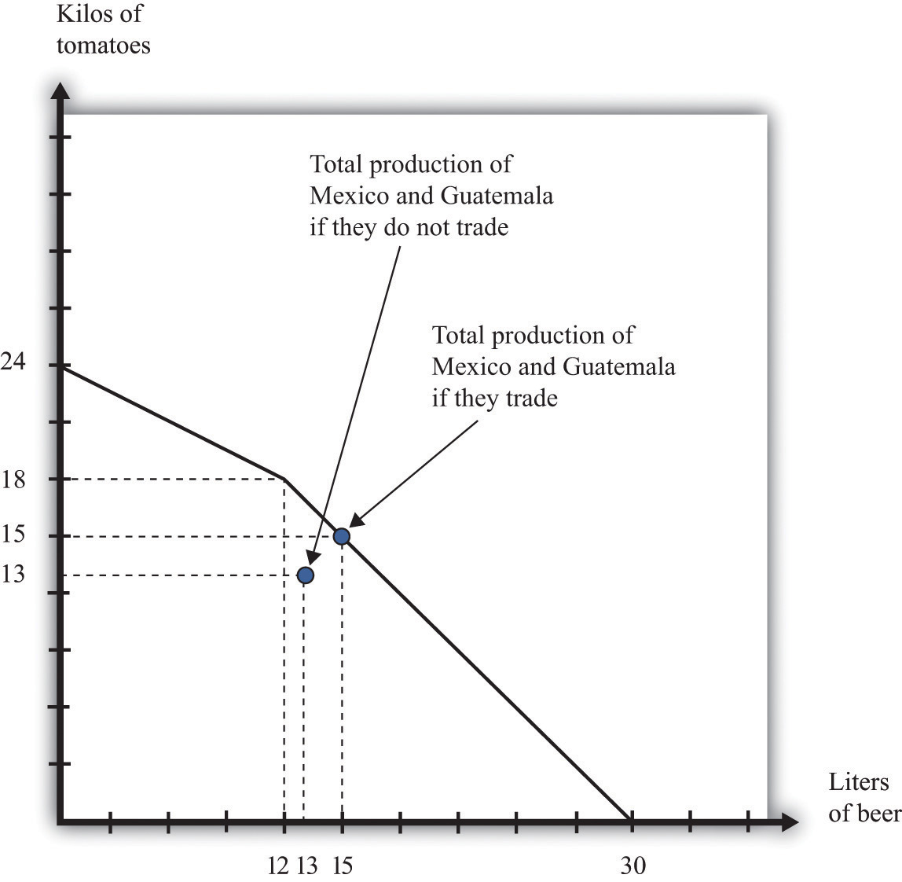Individually, Mexico and Guatemala produce 13 kilograms of tomatoes and 13 liters of beer. Jointly, they can produce 15 kilograms of tomatoes and 15 liters of beer by exploiting comparative advantage.
To economists, the logic of comparative advantage is highly compelling. Yet noneconomists are much less convinced about the desirability of free trade between countries. We see this reflected in the fact that countries erect a multitude of barriers to trade. Where economists see the possibility of free trade and mutual gain, others often see unfair competition. For example, many countries in the developing world have very low wages compared to the United States, Europe, and other relatively developed economies. Economists see this as a source of comparative advantage for those countries. Because labor is cheap, those countries can produce goods that require a large amount of labor. Countries like the United States, by contrast, can specialize in the production of goods that require less labor. The logic of comparative advantage suggests that both countries would be made better off. To noneconomists, however, the cheap labor looks like “unfair” competition—how can workers in rich countries compete with workers in poor countries who are paid so much less?
This concern has some merit. Comparative advantage tells us that a country as a whole is made better off by trade because that country can have more goods available for consumption. Yet comparative advantage, in and of itself, says nothing about who gets those benefits or how they are shared.
Hypothetically, it is possible to share these goods so that everyone is made better off.Actually, even this statement carries an implicit assumption that it is possible to share out these goods without distorting economic activity too much. In Chapter 13 "Superstars", we explain that redistribution typically involves some loss in efficiency. As a practical matter, even if the country as a whole has more goods and services to consume, some individuals within the country are made worse off. There are winners and losers from trade, and there is frequently political pressure to limit international trade from or on behalf of those who lose out.
Another reason governments intervene in international trade is because of political lobbying. Generally, the beneficiaries from trade barriers are a small and identifiable group. For example, the United States provides sugar subsidies that increase the price of sugar. Sugar producers are the clear beneficiaries of this policy and have an incentive to lobby the government to ensure that the subsidies stay in place. The losers from this policy are those who consume sugar—that is, all of us. But there is no lobby representing sugar consumers.
Whatever the reasons, governments frequently intervene in international trade. Sometimes they completely close certain markets. Sometimes they impose limits on how much can be imported from abroad. And sometimes they impose special taxes on imports. We look at each in turn.
In some cases, governments close down certain categories of overseas trade completely. They may do so in an attempt to further international political goals. An example from our shopping list is the Cohiba cigars. You cannot buy these directly from Cuba due to a ban on the import of Cuban goods into the United States.The sanctions began in 1962 in response to the takeover of US property by the Cuban government of Fidel Castro. The Cuban Democracy Act of 1992 extended the sanctions. US Department of State, “Title XVII—Cuban Democracy Act of 1992,” accessed March 14, 2011, http://www.state.gov/www/regions/wha/cuba/democ_act_1992.html. This policy is designed to make it harder for Cuba to function in the world economy and thus puts pressure on the Cuban government.
Governments quite often use international sanctions in an attempt to achieve political goals. These measures can be enacted by individual governments or by international bodies such as the United Nations. Currently, the international community is putting pressure on Iran because of concerns about the development of nuclear capabilities in that country.An embargo on trade with Iran was imposed by the United States in 1987. Details can be found at US Department of the Treasury, Resource Center, “Iran Sanctions,” accessed March 14, 2011, http://www.treasury.gov/resource-center/sanctions/Programs/Pages/iran.aspx. From 1990 to 2003, there were international sanctions placed on trade with Iraq.
Governments also ban certain products from overseas for reasons of health and safety. The United States does not allow the importation of cheeses made with raw milk because it argues that such cheeses pose a health risk; thus it is difficult to find the French raw milk camembert on our shopping list. When the United Kingdom had an outbreak of bovine spongiform encephalopathy (better known as mad cow disease), many countries banned the import of beef from that country. More generally, countries have their own health and safety laws, so foreigners who wish to compete in these markets must ensure that they satisfy these standards.
Another way in which governments frequently intervene in international transactions is by means of a quotaA quantity restriction on imports.—that is, a quantity restriction on imports. Figure 12.14 "The Effects of a Quota" gives an example of how quotas work. Suppose that Australian consumers buy both domestically produced cars (Holdens) and cars imported from the United States (Fords). These cars are not perfect substitutes for each other, so we draw a market for each kind of car. To begin with, both markets are in equilibrium where demand equals supply. Suppose that Australia were then to impose a quota on the import of Fords. The price of Fords is determined by consumers’ willingness to pay at the quantity set in the quota—that is, we can find the price by looking at the demand curve. Australian consumers must pay more for Fords. Meanwhile, the fact that fewer Fords are being sold means that Australian households will demand more Holdens. The demand curve shifts to the right. This increases the price of domestic vehicles.
Figure 12.14 The Effects of a Quota
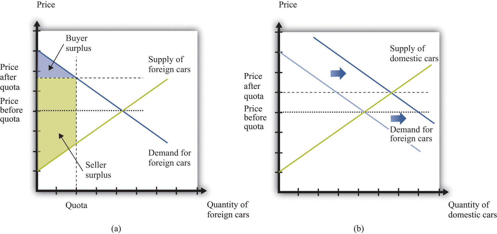After the imposition of the quota, the price of cars increases in the market for foreign cars (a) and the demand for domestic cars increases (b).
Who are the winners and the losers in this process? The clear winners are domestic producers of automobiles. They get to sell more cars at a higher price, and their surplus increases. Australian consumers, meanwhile, are losers. We cannot see this immediately by looking at the buyer surplus because the buyer surplus decreases in the market for foreign cars but increases in the market for domestic cars. However, we can tell that consumers are worse off because both domestic and foreign cars have become more expensive. Finally, the effects on foreign producers are in general ambiguous. They sell fewer cars but at a higher price. American producers might even benefit from the Australian quota.
In general, governments that impose quotas are transferring resources from domestic consumers to domestic producers. This illustrates the point we made earlier: the beneficiaries of this kind of policy are typically a small group—in this case, producers of Holdens. The losers are everyone who wants to buy a car. The producers are likely to have much more political influence than the consumers.
Where quotas are the equivalent of quantity restrictions, applied in the context of international trade, tariffs are the equivalent of taxes. A tariffAn amount that must be paid by someone who wishes to import that good from another country. on a good is an amount that must be paid by someone who wishes to import that good from another country. The main implication of a tariff is that the price received by foreign sellers is less than price paid by domestic consumers. We illustrate a tariff in Figure 12.15 "The Effects of a Tariff".
Figure 12.15 The Effects of a Tariff
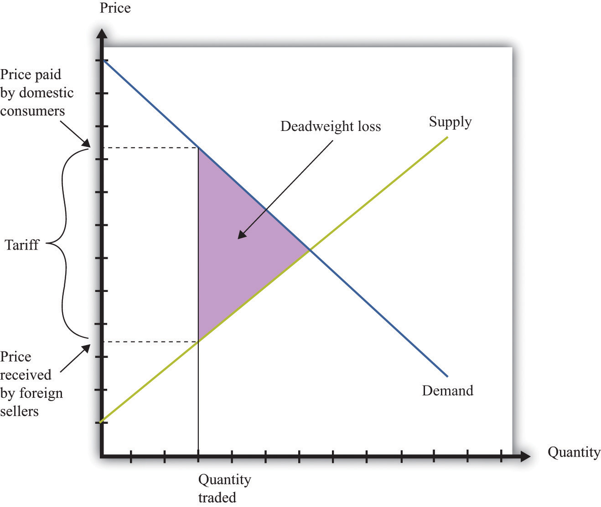A tariff means that there is a wedge between the price paid by domestic buyers and the price received by foreign sellers. Just as with a tax, the quantity traded is lower because some transactions are no longer worthwhile. There is a deadweight loss.
The main implications are very similar to those of a tax. Consumers are made worse off, as are foreign producers. There is a deadweight loss, as indicated in Figure 12.15 "The Effects of a Tariff". As with quotas, tariffs are often designed to protect domestic producers. Thus, as we saw when looking at a quota (Figure 12.14 "The Effects of a Quota"), a tariff on foreign goods induces a substitute toward goods produced in the domestic country. This is the law of demand at work: when the price of a good increases, the demand for substitute products will be increased.
One element that distinguishes a tariff from a quota is the collection of government revenue. When a quota is imposed, trade is limited at a particular quantity, but the government collects no revenue. Instead, as shown in Figure 12.14 "The Effects of a Quota", the surplus from the trade is distributed among buyers and sellers. When a tariff is imposed, the government collects revenue equal to the product of the tariff and the quantity traded. Comparing Figure 12.14 "The Effects of a Quota" with Figure 12.15 "The Effects of a Tariff", part of the surplus that was shared by buyers and sellers under the quota is now captured as revenue by the government. This parallels the results that we saw when looking at domestic quotas and taxes earlier in the chapter.
Some of the most important sets of markets in the economy are those for different kinds of labor. There are many ways in which governments intervene in these markets.
Toolkit: Section 31.3 "The Labor Market"
You can review the labor market in the toolkit.
Some occupations cannot be carried out without licensing or accreditation of some kind. You cannot set up in business as a doctor or a lawyer without any training. Here, the government’s reason for intervening is because of information problems: we do not have the knowledge to determine if someone is indeed trained in medicine or law.Chapter 16 "A Healthy Economy" has more to say about this.
Other things equal, people want to move to where they can earn a high wage. Within the United States, people are free to move from state to state in search of good jobs and good wages. Workers are likewise free to move among the countries of the European Union. In both places, we see many examples of people moving to where wages are higher. Young Polish students move to the United Kingdom in search of work; workers in Louisiana move to Washington state because wages are higher there. Obviously, many factors influence where people choose to live and work, but wages are one of the most important.
If a firm is willing to pay a worker $15 per hour in New Jersey but firms in Idaho will pay that same worker only $12 per hour, then this is an indication that the worker’s time is more valuable in New Jersey than it is in Idaho. The market, through the higher wage, sends a signal to the worker that it is desirable to move. The movement of workers from Idaho to New Jersey will cause the supply curve of labor in Idaho to shift to the left, so wages in Idaho will increase, and the supply curve of workers in New Jersey to shift to the right, so wages in New Jersey will decrease. The movement of workers thus also serves to make wages more equal.
Workers in the United States are permitted to move anywhere in the country. The same is true for workers in New Zealand, Mexico, and most other countries. In some places, however, laws enacted by national or local governments make such migration harder. In China, certain government benefits are highly localized, making it difficult for a worker to move from one town to another.
In a world with no restrictions on labor movement, workers would move across countries as they do within a country. Consider the market for labor within the European Union. Figure 12.16 "Migration Eliminates Wage Differences" shows the markets for workers in Portugal and France. If labor is unable to migrate, then the equilibrium wage in France is higher than the wage in Portugal. Once labor mobility is allowed within Europe, workers naturally move to the labor market with the higher wage. This forces wages to decrease in France and increase in Portugal.
Figure 12.16 Migration Eliminates Wage Differences

Workers move from Portugal to France in search of higher wages.
If workers care only about wages, then migration would completely equalize wages in France and Portugal. In practice, some differences in wages persist. For example, if most people think living in Portugal is better than living in France, then the wage rate in Portugal will be lower than that in France. Despite this wage differential, individuals living in Portugal will not move to France. The higher wage is France is an example of a compensating wage differentialThe amount in excess of the normal wage paid to compensate a worker for undesirable aspects of a job.: it is the difference in wages needed to compensate individuals for living and working in France.
Free migration across countries exists in the European Union, but international migration is typically much more restricted. One of the items on our shopping list at the beginning of the chapter was the hiring of an illegal domestic worker. This is yet one more example of a restriction on trade because people are not allowed to work wherever they want. Most countries restrict the amount of immigration permitted into the country; some countries restrict emigration as well.
Governments also affect the labor market through the imposition of taxes. In most countries, there is an income tax. In some cases, income taxes may also be imposed more locally: some individual states within the United States have an income tax in addition to the federal tax. An income tax works like the taxes we saw earlier. Fundamentally, it means that the amount paid by the employer exceeds the amount received by the worker. Exactly as before, this gives rise to a deadweight loss. Some workers will choose not to work or work fewer hours because of the tax. It follows that some mutually beneficial transactions go unrealized.
Because the market for labor is so fundamental to the economy and because the income tax is, in most economies, a major source of revenue for the government, economists and politicians pay a lot of attention to this market. Figure 12.17 "The Effect of an Income Tax in the Labor Market" summarizes the effects of a tax on wages using a diagram of the labor market. When there is a tax on wages, there is a gap between the wage paid by the firm and the wage received by the worker. As shown in the figure, the effect of the tax is to reduce the quantity of labor traded. The wage paid by the firm is higher than the wage in the original equilibrium, and the wage received by the worker is less than the wage in the original equilibrium.
Figure 12.17 The Effect of an Income Tax in the Labor Market

An income tax means that there is a wedge between the wage paid by the firm and the wage received by a worker.
As in our earlier example, the incidence of the tax will depend on the elasticity of labor supply and labor demand. We can understand incidence by looking at how the tax on labor income affects the wage. If the wage paid by the firm increases by the amount of the tax, then the firm is paying the tax. This will happen if the demand for labor is very inelastic. If the wage received by the worker decreases by the amount of the tax, then the worker is paying the tax, not the firm. This will happen if the supply of labor is very inelastic.
In some countries, governments have difficulty collecting income taxes from their citizens. This is partly an enforcement issue: if many people in a country misrepresent their income, it is difficult to hire enough people to enforce the tax laws. In this case, income taxes become ineffective, and governments resort to other forms of taxation, such as sales taxes.
Another form of tax evasion is to conduct trades in the underground economy. When income taxes are very high, small business owners and other individuals may offer to do work “under the table.” They will ask to be paid in cash, so there is no record of the transaction and no basis for collecting income tax. In return, they will do the work for a cheaper price. This is illegal, but the likelihood of getting caught is low enough that many people decide that avoiding the income tax is worth the crime. The magnitude of this underground activity can be substantial: “In a report to the Senate in May, Deputy Finance Minister Vincenzo Visco said that the hidden, untaxed economy accounted for around 27 percent of Italy’s gross domestic product of nearly $2 trillion.”Elisabetta Povoledo, “Italy Changes Rules of Tax-Evasion Game,” New York Times, June 13, 2007, accessed January 29, 2011, http://www.nytimes.com/2007/06/13/world/europe/13iht-taxes.4.6129007.html?_r=1.
Thus there are two different aspects of the underground economy. There is the exchange of goods and services that cannot be traded legally (drugs, scalped tickets, etc.). And there are trades that are legal but not reported to the tax authorities (illegal).
The underground economy tends to be larger when income taxes are higher and where tax enforcement is difficult, but it exists everywhere. If your neighbor pays you $20 to mow his lawn, and you do not declare this on your taxes, you are participating in the underground economy. Besides allowing you to avoid income taxes, working in the underground economy has an additional benefit. If you do not work a regular job, then you can collect unemployment insurance. This means that you can work and earn income without paying taxes in the underground economy and also collect unemployment insurance.
A recent study by the International Monetary Fund (IMF) concluded, “In the European Union in the late 1990s, 20 million people engaged in shadow [underground] economy activities. In all European OECD countries combined, about 35 million people did so. In some individual countries, the shadow economy labor force was very large: in Italy, 30–48 percent of the total labor force (1997); Spain, 12–32 percent (1997–98); and Sweden, 20 percent (1997–98). In many countries, these high shares coexisted with high official rates of unemployment.”Friedrich Schneider and Dominik Enste, “Hiding in the Shadows: The Growth of the Underground Economy,” International Monetary Fund, March 2002, accessed January 29, 2011, http://www.imf.org/external/pubs/ft/issues/issues30. According to this study, the underground economy is between 35 percent and 44 percent of gross domestic product (GDP) in developing countries and around 15 percent in the advanced Organisation for Economic Co-operation and Development (OECD) countries.
Finally, people sometimes barter goods and services rather than trade them. If you are a web designer and your next-door neighbor is a plumber, you might agree to build a website for her in exchange for her installing a new shower for you. Again, if you fail to report this “income in kind,” you are evading taxes. Bartering schemes can be very sophisticated, involving the creation of groups that set up their own special money to pay for transactions.
The underground economy is not new; it has been around for as long as rulers have been levying taxes and banning trades. If you read about the prohibition of alcohol in the United States, for example, you will quickly learn that there was still a thriving market for alcohol and alcoholic beverages, despite the illegality of these trades. This was partly due to the fact that the production of alcohol was legal in nearby countries, such as Canada. Alcohol produced in Canada and elsewhere was imported and sold in the United States.
The establishments that served alcohol at that time were called speakeasies. Today you can find local bars that advertise themselves as having started as speakeasies during the Prohibition years. Of course, while Prohibition was in force, the speakeasies did not advertise so loudly. They were generally run by gangs that were willing to take the risk of being arrested to get the profits from selling alcohol.
Associated with Prohibition are several infamous individuals, such as Al Capone and his competitor, Bugs Moran. They were leaders of gangs in Chicago that provided alcohol to speakeasies. But you can, if you like, think of them as managers of firms that were involved in the importation, manufacturing, production, and sale of a consumer good. In many ways these firms operated according to the same principles as firms in this textbook. They were interested in producing efficiently and maximizing their profits.
Capone was eventually indicted and convicted. But the legal action against Capone was not directed at his violation of Prohibition. Instead, the federal government indicted him for tax evasion. Even if you are a leading producer in the underground economy, you still have to pay your taxes.
This story of Prohibition reminds us that the government does more than simply restrict trades in the economy. The government also provides the framework that allows trades. It provides a system of laws that allows people to enter into contracts, and it provides courts as a mechanism for enforcing these contracts.
Capone and Moran could not turn to the government to enforce their contracts and agreements. The firms in the industry had to create their own mechanisms for settling disputes. You won’t be surprised to hear that these mechanisms were not pretty. One famous incident was the Saint Valentine’s Day Massacre in 1929 when the Capone gang engaged the rival gang led by Bugs Moran. This was like a strategic interaction between rival producers. In this case, their respective competitive strategies left seven people dead. When the government is not there to enforce contracts, agreements will be enforced by other, often violent, means.
Economics Detective